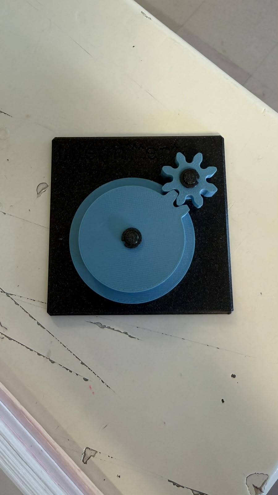
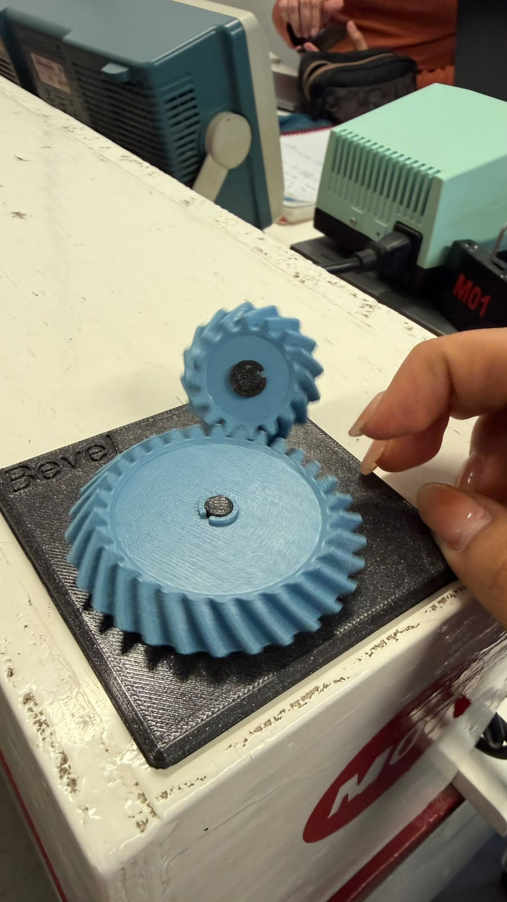
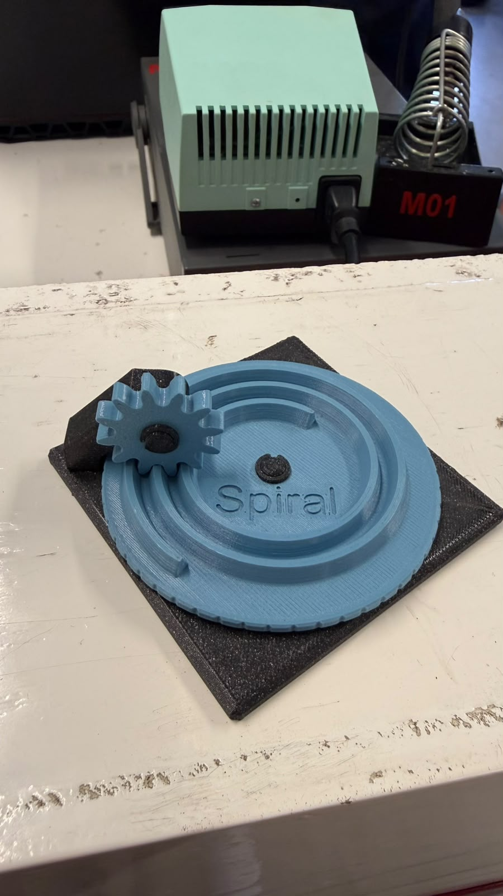
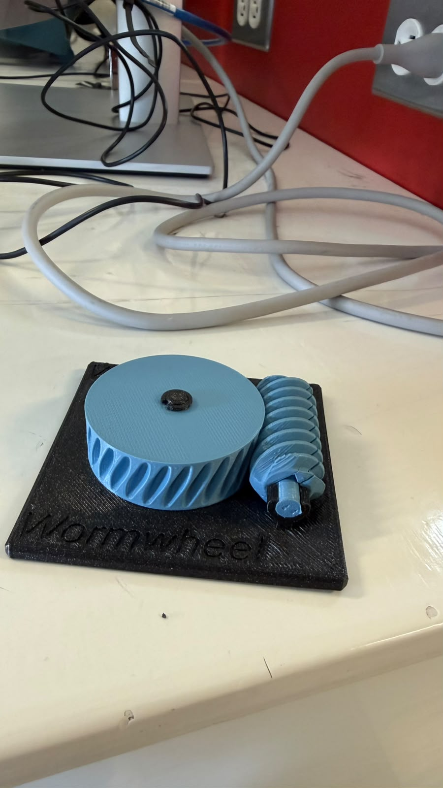
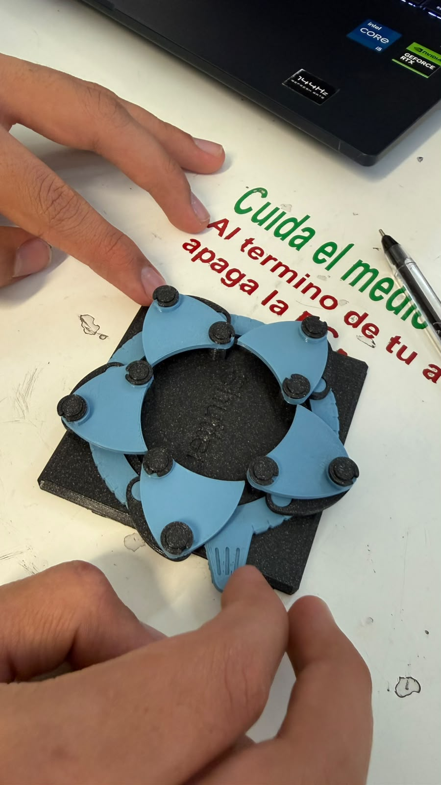
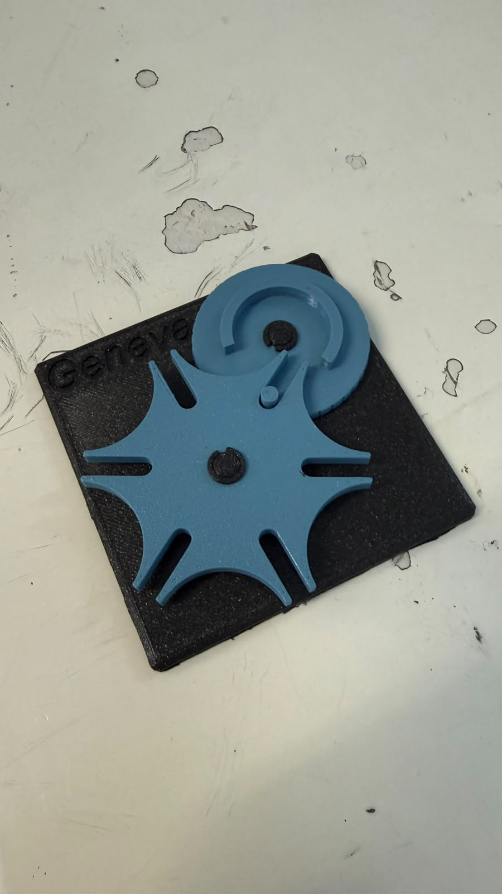
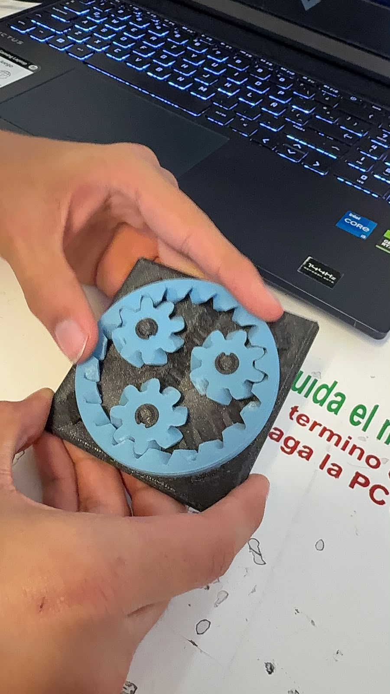
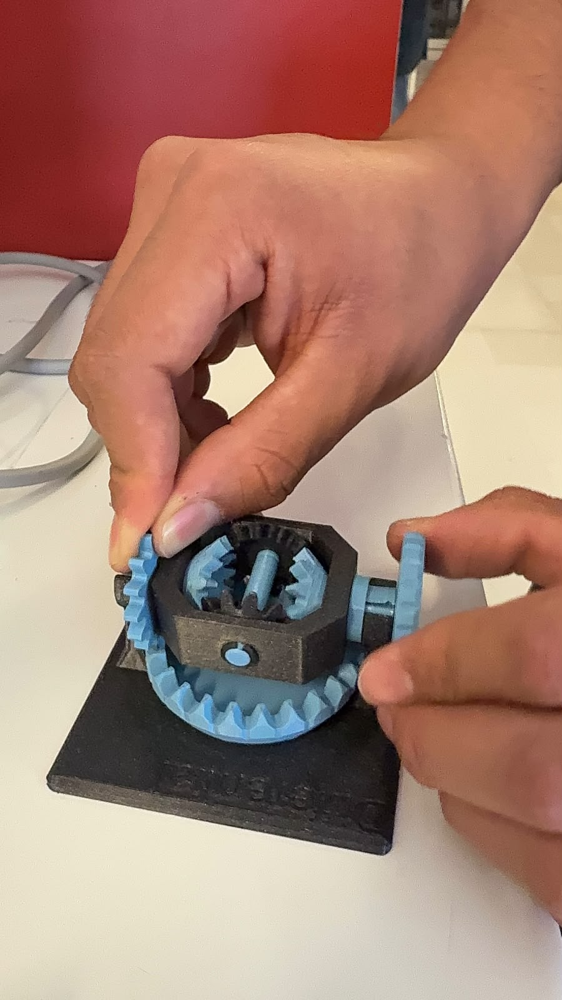
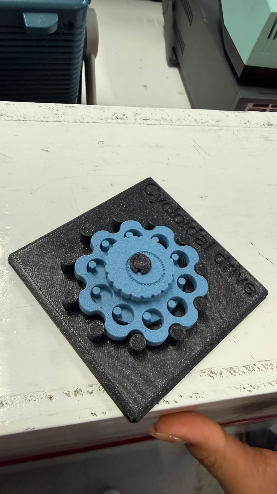

Sesión 5 — Mecanismo
Qué debía lograr hoy
- [✅] Entender cómo los mecanismos transforman el movimiento
- [✅] calcular relaciones de transmisión simples
Qué usé
- Planetary en 3D
- Bevel en 3D
- Spiral en 3D
- Cycloidal drive en 3D
- Worm/Worm drive en 3D
- Pulley en 3D
- Intermittent en 3D
- Geneva en 3D
- Universal joint en 3D
- Shutter en 3D
- Differential en 3D
Qué hice y qué pasó (evidencia)
Intermittent Mechanism

Bevel Gear

Universal Joint

Spiral

Worm Gear

Shutter

Geneva Mechanism

Star Wheel Mechanism

Differential

Cycloidal Gear

Relación de transmisión
Para dos engranes acoplados, con Z1 dientes en el engrane de entrada y Z2 dientes en el de salida, la relación de transmisión (i) se define como:
i = Z2 / Z1 = w_entrada / w_salida = tau_salida / tau_entrada
Interpretación
- Si i > 1 → hay reducción: la salida gira más lento, pero entrega más par (torque).
- Si i < 1 → hay multiplicación: la salida gira más rápido, pero con menos par.
- La velocidad angular (w) y el par (tau) se intercambian de forma inversa:
- w2 = w1 / i
- tau2 = tau1 * i (restando las pérdidas por fricción)
Trenes de engranes compuestos
Cuando se conectan varias etapas de engranes en serie, las relaciones individuales se multiplican entre sí. Ejemplo: dos etapas, una de 1:4 y otra de 1:16, combinadas dan una relación total mayor. Así, una caja reductora tipo motor TT logra una relación de 1:48 en un espacio muy pequeño.
Ejemplo resuelto
Un piñón de 12 dientes mueve un engrane de 36 dientes:
i = 36 / 12 = 3
Resultado: la salida gira a 1/3 de la velocidad de entrada, pero con 3 veces más par.
Tabla de estaciones
| Estación | ¿Qué transforma? | Relación i estimada | ¿Reversible o autobloqueante? | ¿Dónde lo has visto en la vida real? | ¿Dónde serviría en el carro o en un proyecto tuyo? |
|---|---|---|---|---|---|
| A - Diferencial | Cambio de eje (reparte una entrada de giro en dos salidas, permite velocidades distintas) | ~1:1 entre salidas en línea recta; varía en curva | Reversible, NO autobloqueante | Eje trasero/delantero de un carro | Ruedas independientes de un robot que da vuelta |
| B - Cicloidal | vel<->par (reducción de velocidad, aumento de par) | Alta, típico 30:1 a 100:1+ | Reversible pero con fricción; casi autobloqueante en relaciones altas | Reductores de brazos robóticos industriales | Reductor compacto para un brazo robótico de precisión |
| C - Cardán | Cambio de eje (transmite giro entre ejes desalineados o angulados) | ~1:1 (leve variación angular) | Reversible, NO autobloqueante | Flecha cardán del carro (motor -> ruedas traseras) | Transmitir giro de un motor a una rueda con ángulo variable |
| D - Obturador | Continuo<->intermitente (giro de un anillo abre/cierra hojas) | No aplica dientes; es leva | Reversible, NO autobloqueante | Diafragma de una cámara fotográfica | Mecanismo de apertura/cierre tipo iris en un proyecto |
| E1 - Spiral | rot<->trasl (el resorte en espiral convierte jalón lineal en giro almacenado, y viceversa) | Variable (cambia con cada vuelta del resorte) | Reversible, NO autobloqueante (regresa solo por el resorte) | Cinta métrica, cable retráctil de aspiradora | Retorno automático de un cable/cordón en tu proyecto |
| E2 - Crown | (pendiente: falta la foto para confirmar el mecanismo) | (pendiente) | (pendiente) | (pendiente) | (pendiente) |
Qué falló y cómo lo resolví
- Síntoma: No me salía el resultado del ejemplo (piñón de 12 dientes moviendo un engrane de 36); me confundía si i = Z1/Z2 o i = Z2/Z1, y qué significaba el resultado.
- Cómo lo encontré: Comparé mi cálculo con el ejemplo resuelto de la bitácora (i = 36/12 = 3) y noté que había invertido los términos / mal interpretado si la salida giraba más rápido o más lento.
- Solución: Recordé que Z2 siempre va arriba (Z2/Z1), donde Z2 es el engrane de SALIDA. Con i = 3 > 1, es una reducción: la salida gira 3 veces más lento, pero con 3 veces más par.
Qué aprendí
No sabía nada sobre engranes ni cómo funcionaban antes de esta clase. Ahora entiendo que la relación de transmisión (i = Z2/Z1) no es solo un número: define si un mecanismo prioriza velocidad o fuerza (par), y que ambas cosas siempre se intercambian, nunca se ganan las dos al mismo tiempo. También aprendí que "engranes" no es solo la rueda dentada típica: existen mecanismos como el diferencial, el cicloidal, el obturador o la junta cardán que transforman movimiento de formas muy distintas (rotación a traslación, continuo a intermitente, cambio de eje), y que viéndolos físicamente es mucho más fácil entender para qué sirve cada uno.
Siguiente paso
Buscar más aplicaciones de los engranes en la vida diaria